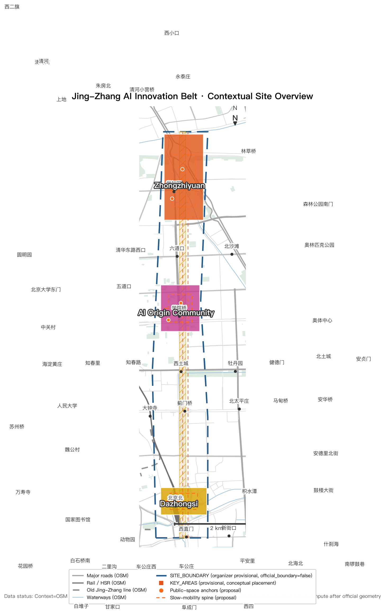

Zhongzhiyuan · 192.1 ha
AI kindergarten-to-lab: open-source laboratories, compute science museum, AI-native flagship school.
Offline digital exhibit. Authoritative data remain in GeoJSON, metrics.json, matrices and self-check; this page translates the overall concept, three key areas, land-use structure, metric system and key scenarios into a human-readable visual narrative.
Deterministic validation: PASS · Spatial review: PASS (provisional) · Visual packaging: PASS · Professional evidence: PASS · Formal review: ready
Organizer data gap: official SITE_BOUNDARY and three KEY_AREA polygons not yet released; provisional geometry is used for generation, display and provisional recomputation only (official_boundary=false) and does not block content scoring; full metric recalculation triggered when official geometry is supplied (Organizer data gap — not a participant blocker; recalculation trigger)
The dual nature of AI: national infrastructure (compute clusters) and personal companions (agents) are translated along this century-old railway — from national energy to personal warmth.
Jing-Zhang's second answer: in 1909 Zhan Tianyou's herringbone railway proved "technology can be autonomous"; in 2026 this belt must prove "technology can serve the people".
Silicon companion: long-term memory + proactive service + deep participation. The AI-native first generation grows up directly in the new interface of "companion handles it, plain speech connects, auditable and accountable" — without PPT, App or approval baggage.

AI kindergarten-to-lab: open-source laboratories, compute science museum, AI-native flagship school.
AI growing-up community: AI Origin Plaza (where a child receives their first silicon companion), AI council pavilion network, companion stations.
AI living market: companion-direct consumption street, AI living market, smart native new-format incubation.
12 scenario cards (≥10 required): each with data-minimum set, human takeover point, failure handling, exit mechanism, success metrics, operator and space needs — see report/narrative.md. 4 test-and-verify scenarios (S2/S8/S10/S12, ≥3 required, with hypothesis/pilot scope/safety threshold/stop condition/rollback/evaluation window); 6 personas P1-P6 (≥5 required, covering AI-refusers, low-digital-skill users, persons with disabilities).
Flagship institutions: Silicon Companion Growing Contract (voluntary / exitable / auditable / portable, 19 clauses + Stage-Gate pilot), City Agent Protocol (layered architecture + nine requirements), and Agent First, Never Agent Only three parallel paths (Agent delegation / human digital interface / in-person service) — see report/narrative.md.
3 landmarks: AI Origin, Open Intelligence Wall, Human-Agent Commons; plus honor display system and public-space component library — see report/narrative.md.
Annual operations system: nine standing mechanisms + Idea→Sandbox→Pilot→Evaluate→Deploy/Stop→Open-source loop — see report/narrative.md.
Conceptual suggestion: all spatial structures, metrics and projects are AI agent concept proposals; they do not replace professional planning or bypass governmental approval and statutory procedures. All materials come from public or cleared sources.
Review-visible evidence: 12 scenario cards, 6 personas, 3 landmarks, component library and annual operations loop. All conceptual (Concept Visualization); geometry is organizer provisional (official_boundary=false).
Full card fields (users/pain point/Agent role/callable/not-allowed/minimal data/human takeover/exit/success metrics/operator/spatial need/stage) in report/narrative.md.
Agent kiosk · Audit/consent terminal · AI discussion pavilion · Open-source showcase · Companion station · Accessible human-service point · Origin Dot marker — every Agent component pairs with a human/accessible component (Agent First, Never Agent Only).
Personal Data → Consent → Minimum Required Data → Agent Processing → City Service Call → Audit Log → Human Review → Delete / Migrate / Appeal / Stop
Idea → Sandbox (hypothesis+entry+safety baseline) → Pilot (quota+human takeover) → Evaluation (independent) → Deploy / Stop (public notice) → Open Source (M8) → Next Cycle. Nine mechanisms: M1 Origin Day + Open Intelligence Award · M2 Developer/Agent community · M3 Public API Challenge · M4 Public scenario testing · M5 Children AI-native program · M6 International developer residency · M7 Enterprise testbed opening · M8 Open-source release · M9 Civic governance + safety/rights audit.